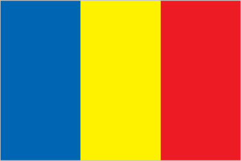
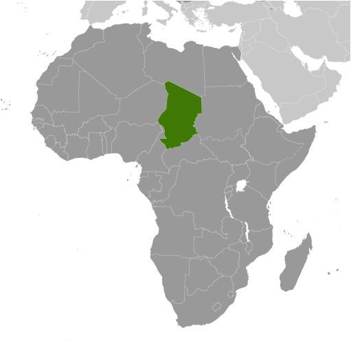
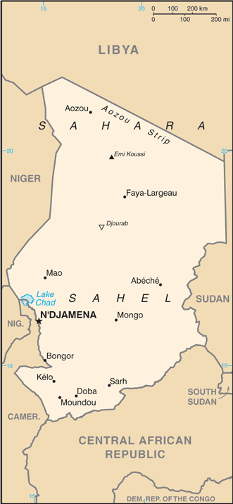

Africa :: CHAD
Introduction :: CHAD
-
Chad, part of France's African holdings until 1960, endured three decades of civil warfare, as well as invasions by Libya, before peace was restored in 1990. The government eventually drafted a democratic constitution and held flawed presidential elections in 1996 and 2001. In 1998, a rebellion broke out in northern Chad, which has sporadically flared up despite several peace agreements between the government and insurgents. In June 2005, President Idriss DEBY held a referendum successfully removing constitutional term limits and won another controversial election in 2006. Sporadic rebel campaigns continued throughout 2006 and 2007. The capital experienced a significant insurrection in early 2008, but has had no significant rebel threats since then, in part due to Chad's 2010 rapprochement with Sudan, which previously used Chadian rebels as proxies. In late 2015, the government imposed a state of emergency in the Lake Chad region following multiple attacks by the terrorist group Boko Haram throughout the year; Boko Haram also launched several bombings in N'Djamena in mid-2015. DEBY in 2016 was reelected to his fifth term in an election that was peaceful but flawed. In December 2015, Chad completed a two-year rotation on the UN Security Council. In January 2017, DEBY completed a one-year term as President of the African Union.
Geography :: CHAD
-
Central Africa, south of Libya15 00 N, 19 00 EAfricatotal: 1.284 million sq kmland: 1,259,200 sq kmwater: 24,800 sq kmcountry comparison to the world: 22almost nine times the size of New York state; slightly more than three times the size of Californiatotal: 6,406 kmborder countries (6): Cameroon 1,116 km, Central African Republic 1,556 km, Libya 1,050 km, Niger 1,196 km, Nigeria 85 km, Sudan 1,403 km0 km (landlocked)none (landlocked)tropical in south, desert in northbroad, arid plains in center, desert in north, mountains in northwest, lowlands in southmean elevation: 543 melevation extremes: lowest point: Djourab 160 mhighest point: Emi Koussi 3,445 mpetroleum, uranium, natron, kaolin, fish (Lake Chad), gold, limestone, sand and gravel, saltagricultural land: 39.6%arable land 3.9%; permanent crops 0%; permanent pasture 35.7%forest: 9.1%other: 51.3% (2011 est.)300 sq km (2012)the population is unevenly distributed due to contrasts in climate and physical geography; the highest density is found in the southwest, particularly around Lake Chad and points south; the dry Saharan zone to the north is the least densely populatedhot, dry, dusty harmattan winds occur in north; periodic droughts; locust plaguesinadequate supplies of potable water; improper waste disposal in rural areas contributes to soil and water pollution; desertificationparty to: Biodiversity, Climate Change, Desertification, Endangered Species, Hazardous Wastes, Ozone Layer Protection, Wetlandssigned, but not ratified: Law of the Sea, Marine Dumpingnote 1: Chad is the largest of Africa's 16 landlocked countriesnote 2: not long ago - geologically speaking - what is today the Sahara was green savannah teeming with wildlife; during the African Humid Period, roughly 11,000 to 5,000 years ago, a vibrant animal community, including elephants, giraffes, hippos, and antelope lived there; the last remnant of the "Green Sahara" exists in the Lakes of Ounianga (oo-nee-ahn-ga) in northern Chad, a series of 18 interconnected freshwater, saline, and hypersaline lakes now protected as a World Heritage sitenote 3: Lake Chad, the most significant water body in the Sahel, is a remnant of a former inland sea, paleolake Mega-Chad; at its greatest extent, sometime before 5000 B.C., Lake Mega-Chad was the largest of four Saharan paleolakes that existed during the African Humid Period; it covered an area of about 400,000 sq km (150,000 sq mi), roughly the size of today's Caspian Sea
People and Society :: CHAD
-
12,075,985 (July 2017 est.)country comparison to the world: 75noun: Chadian(s)adjective: ChadianSara (Ngambaye/Sara/Madjingaye/Mbaye) 29.9%, Kanembu/Bornu/Buduma 9.7%, Arab 9.6%, Wadai/Maba/Masalit/Mimi 7.5%, Gorane 5.8%, Masa/Musseye/Musgum 4.9%, Marba/Lele/Mesme 3.7%, Bulala/Medogo/Kuka 3.6%, Bidiyo/Migaama/Kenga/Dangleat 2.6%, Dadjo/Kibet/Muro 2.5%, Mundang 2.5%, Tupuri/Kera 2.1%, Gabri/Kabalaye/Nanchere/Somrai 2%, Fulani/Fulbe/Bodore 1.9%, Karo/Zime/Peve 1.3%, Zaghawa/Bideyat/Kobe 1.1%, Tama/Assongori/Mararit 1.1%, Baguirmi/Barma 1.1%, Mesmedje/Massalat/Kadjakse 0.8%, other Chadian ethnicities 3.2%, Chadians of foreign ethnicities 0.9%, foreign nationals 0.4%, unspecified 1.7% (2014-15 est.)French (official), Arabic (official), Sara (in south), more than 120 different languages and dialectsMuslim 52.1%, Protestant 23.9%, Roman Catholic 20%, animist 0.3%, other Christian 0.2%, none 2.8%, unspecified 0.7% (2014-15 est.)Despite the start of oil production in 2003, 40% of Chad’s population lives below the poverty line. The population will continue to grow rapidly because of the country’s very high fertility rate and large youth cohort – more than 65% of the populace is under the age of 25 – although the mortality rate is high and life expectancy is low. Chad has the world’s third highest maternal mortality rate. Among the primary risk factors are poverty, anemia, rural habitation, high fertility, poor education, and a lack of access to family planning and obstetric care. Impoverished, uneducated adolescents living in rural areas are most affected. To improve women’s reproductive health and reduce fertility, Chad will need to increase women’s educational attainment, job participation, and knowledge of and access to family planning. Only about a quarter of women are literate, less than 5% use contraceptives, and more than 40% undergo genital cutting.As of October 2017, more than 320,000 refugees from Sudan and more than 75,000 from the Central African Republic strain Chad’s limited resources and create tensions in host communities. Thousands of new refugees fled to Chad in 2013 to escape worsening violence in the Darfur region of Sudan. The large refugee populations are hesitant to return to their home countries because of continued instability. Chad was relatively stable in 2012 in comparison to other states in the region, but past fighting between government forces and opposition groups and inter-communal violence have left nearly 60,000 of its citizens displaced in the eastern part of the country.0-14 years: 43.02% (male 2,634,817/female 2,560,790)15-24 years: 21.46% (male 1,267,944/female 1,324,115)25-54 years: 28.62% (male 1,574,782/female 1,881,183)55-64 years: 3.88% (male 206,627/female 261,586)65 years and over: 3.02% (male 150,364/female 213,777) (2017 est.)total dependency ratio: 100.2youth dependency ratio: 95.2elderly dependency ratio: 4.9potential support ratio: 20.3 (2015 est.)total: 17.8 yearsmale: 16.8 yearsfemale: 18.8 years (2017 est.)country comparison to the world: 2181.86% (2017 est.)country comparison to the world: 5235.6 births/1,000 population (2017 est.)country comparison to the world: 1713.8 deaths/1,000 population (2017 est.)country comparison to the world: 7-3.2 migrant(s)/1,000 population (2017 est.)country comparison to the world: 176the population is unevenly distributed due to contrasts in climate and physical geography; the highest density is found in the southwest, particularly around Lake Chad and points south; the dry Saharan zone to the north is the least densely populatedurban population: 22.8% of total population (2017)rate of urbanization: 3.7% annual rate of change (2015-20 est.)N'DJAMENA (capital) 1.26 million (2015)at birth: 1.04 male(s)/female0-14 years: 1.03 male(s)/female15-24 years: 0.95 male(s)/female25-54 years: 0.83 male(s)/female55-64 years: 0.79 male(s)/female65 years and over: 0.71 male(s)/femaletotal population: 0.93 male(s)/female (2016 est.)17.9 yearsnote: median age at first birth among women 25-29 (2014/15 est.)856 deaths/100,000 live births (2015 est.)country comparison to the world: 3total: 85.4 deaths/1,000 live birthsmale: 90.7 deaths/1,000 live birthsfemale: 79.8 deaths/1,000 live births (2017 est.)country comparison to the world: 5total population: 50.6 yearsmale: 49.4 yearsfemale: 51.9 years (2017 est.)country comparison to the world: 2244.34 children born/woman (2017 est.)country comparison to the world: 275.7% (2014/15)3.6% of GDP (2014)country comparison to the world: 1690.04 physicians/1,000 population (2013)improved:urban: 71.8% of populationrural: 44.8% of populationtotal: 50.8% of populationunimproved:urban: 28.2% of populationrural: 55.2% of populationtotal: 49.2% of population (2015 est.)improved:urban: 31.4% of populationrural: 6.5% of populationtotal: 12.1% of populationunimproved:urban: 68.6% of populationrural: 93.5% of populationtotal: 87.9% of population (2015 est.)1.3% (2016 est.)country comparison to the world: 38110,000 (2016 est.)country comparison to the world: 412,800 (2016 est.)country comparison to the world: 43degree of risk: very highfood or waterborne diseases: bacterial and protozoal diarrhea, hepatitis A and E, and typhoid fevervectorborne diseases: malaria and dengue feverwater contact disease: schistosomiasisrespiratory disease: meningococcal meningitisanimal contact disease: rabies (2016)6.1% (2016)country comparison to the world: 17128.8% (2015)country comparison to the world: 132.9% of GDP (2013)country comparison to the world: 160definition: age 15 and over can read and write French or Arabictotal population: 22.3%male: 31.3%female: 14% (2016 est.)total: 7 yearsmale: 9 yearsfemale: 6 years (2011)
Government :: CHAD
-
conventional long form: Republic of Chadconventional short form: Chadlocal long form: Republique du Tchad/Jumhuriyat Tshadlocal short form: Tchad/Tshadetymology: named for Lake Chad, which lies along the country's western border; the word "tsade" means "large body of water" or "lake" in several local native languagespresidential republicname: N'Djamenageographic coordinates: 12 06 N, 15 02 Etime difference: UTC+1 (6 hours ahead of Washington, DC, during Standard Time)23 regions (regions, singular - region); Barh el Gazel, Batha, Borkou, Chari-Baguirmi, Ennedi-Est, Ennedi-Ouest, Guera, Hadjer-Lamis, Kanem, Lac, Logone Occidental, Logone Oriental, Mandoul, Mayo-Kebbi Est, Mayo-Kebbi Ouest, Moyen-Chari, Ouaddai, Salamat, Sila, Tandjile, Tibesti, Ville de N'Djamena, Wadi Fira11 August 1960 (from France)Independence Day, 11 August (1960)history: several previous; latest approved by referendum 31 March 1996, entered into force 8 April 1996amendments: proposed as a revision by the president of the republic after a Council of Ministers (cabinet) decision or by the National Assembly; approval for consideration of a revision requires at least three-fifths majority vote by the Assembly; passage requires approval by referendum or at least two-thirds majority vote by the Assembly; amended 2005, 2013 (2017)mixed legal system of civil and customary lawhas not submitted an ICJ jurisdiction declaration; accepts ICCt jurisdictioncitizenship by birth: nocitizenship by descent only: both parents must be citizens of Chaddual citizenship recognized: Chadian law does not address dual citizenshipresidency requirement for naturalization: 15 years18 years of age; universalchief of state: President Idriss DEBY Itno, Lt. Gen. (since 4 December 1990)head of government: Prime Minister Albert Pahimi PADACKE (since 15 February 2016)cabinet: Council of Ministers; members appointed by the president on the recommendation of the prime ministerelections/appointments: president directly elected by absolute majority popular vote in 2 rounds if needed for a 5-year term (no term limits); election last held on 10 April 2016 (next to be held in April 2021); prime minister appointed by the presidentelection results: Lt. Gen. Idriss DEBY Itno reelected president in 1 round; percent of vote - Lt. Gen. Idriss DEBY (MPS) 61.6%, Saleh KEBZABO (UNDR) 12.8%, Laokein Kourayo MEDAR (CTPD) 10.7%, Djimrangar DADNADJI (CAP-SUR) 5.1%, other 9.8%description: unicameral National Assembly (188 seats; 118 directly elected in multi-seat constituencies by proportional representation vote and 70 directly elected in single-seat constituencies by absolute majority vote with a second round if needed; members serve 4-year terms)elections: National Assembly - last held on 13 February and 6 May 2011 (next to be held in 2019)election results: percent of vote by party - NA; seats by party - MPS 117, UNDR 10, RDP 9, URD 8, RNDT/Le Reveil 8, Viva-RNDP 5, FAR 4, PUR 2, UDR 2, PDSA 2, CTPD 2, other minor parties 19note: the National Assembly mandate was extended, reportedly due to a lack of funding for the scheduled 2015 electionhighest court(s): Supreme Court (consists of the chief justice, 3 chamber presidents, and 12 judges or councilors and divided into 3 chambers); Constitutional Council (consists of 3 judges and 6 jurists)judge selection and term of office: Supreme Court chief justice selected by the president; councilors - 8 designated by the president and 7 by the speaker of the National Assembly; chief justice and councilors appointed for life; Constitutional Council judges - 2 appointed by the president and 1 by the speaker of the National Assembly; jurists - 3 each by the president and by the speaker of the National Assembly; judges appointed for 9-year termssubordinate courts: High Court of Justice; Courts of Appeal; tribunals; justices of the peaceChadian Convention for Peace and Development or CTPD [Laoukein Kourayo MEDAR]Federation Action for the Republic or FAR [Ngarledjy YORONGAR]Framework of Popular Action for Solidarity and Unity of the Republic or CAP-SUR [Joseph Djimrangar DADNADJI]National Rally for Development and Progress or Viva-RNDP [Dr. Nouradine Delwa Kassire COUMAKOYE]National Union for Democracy and Renewal or UNDR [Saleh KEBZABO]Party for Liberty and Development or PLD [Mahamat Allahou TAHER]Party for Unity and ReconciliationPatriotic Salvation Movement or MPS [Idriss DEBY]Rally for Democracy and Progress or RDP [Mahamat Allahou TAHER]RNDT/Le ReveilSocial Democratic Party for a Change-over of Power or PDSAUnion for Renewal and Democracy or URD [Sande NGARYIMBE]NAACP, AfDB, AU, BDEAC, CEMAC, EITI (compliant country), FAO, FZ, G-77, IAEA, IBRD, ICAO, ICCt, ICRM, IDA, IDB, IFAD, IFC, IFRCS, ILO, IMF, Interpol, IOC, IOM, IPU, ITSO, ITU, ITUC (NGOs), MIGA, MINUSMA, NAM, OIC, OIF, OPCW, UN, UN Security Council (temporary), UNCTAD, UNESCO, UNIDO, UNOCI, UNWTO, UPU, WCO, WHO, WIPO, WMO, WTOchief of mission: Ambassador Mahamat Nasser HASSANE (since 21 May 2014)chancery: 2401 Massachusetts Avenue NW, Washington, DC 20008telephone: [1] (202) 652-1312FAX: [1] (202) 758-0431chief of mission: Ambassador Geeta PASI (since September 2016)embassy: Avenue Felix Eboue, N'Djamenamailing address: B. P. 413, N'Djamenatelephone: [235] 2251-70-09FAX: [235] 2251-56-54three equal vertical bands of blue (hoist side), gold, and red; the flag combines the blue and red French (former colonial) colors with the red and yellow (gold) of the Pan-African colors; blue symbolizes the sky, hope, and the south of the country, which is relatively well-watered; gold represents the sun, as well as the desert in the north of the country; red stands for progress, unity, and sacrificenote: almost identical to the flag of Romania but with a darker shade of blue; also similar to the flags of Andorra and Moldova, both of which have a national coat of arms centered in the yellow band; design based on the flag of Francegoat (north), lion (south); national colors: blue, yellow, redname: "La Tchadienne" (The Chadian)lyrics/music: Louis GIDROL and his students/Paul VILLARDnote: adopted 1960
Economy :: CHAD
-
Chad’s landlocked location results in high transportation costs for imported goods and dependence on neighboring countries. Oil and agriculture are mainstays of Chad’s economy. Oil provides about 60% of export revenues, while cotton, cattle, livestock, and gum arabic provide the bulk of Chad's non-oil export earnings. The services sector contributes about one-third of GDP and has attracted foreign investment mostly through telecommunications and banking.Nearly all of Chad’s fuel is provided by one domestic refinery, and unanticipated shutdowns occasionally result in shortages. The country regulates the price of domestic fuel, providing an incentive for black market sales.Although high oil prices and strong local harvests supported the economy in the past, low oil prices now stress Chad’s fiscal position. Chad relies on foreign assistance and foreign capital for most of its public and private sector investment. Investment in Chad is difficult due to its limited infrastructure, lack of trained workers, extensive government bureaucracy, and corruption. Chad obtained a three-year extended credit facility from the IMF in 2014 and was granted debt relief under the Heavily Indebted Poor Countries Initiative in April 2015.In 2017, economic policy will be driven by efforts that started in 2016 to reverse the recession and to repair damage to public finances and exports. The government is implementing an emergency action plan to counterbalance the drop in oil revenue and to diversify the economy. Multinational partners, such as the African Development Bank, the EU, and the World Bank are likely to continue budget support in 2017, but Chad will remain at high debt risk, given its dependence on oil revenue and pressure to spend on subsidies and security.$28.96 billion (2016 est.)$30.56 billion (2015 est.)$29.71 billion (2014 est.)note: data are in 2016 dollarscountry comparison to the world: 132$10.1 billion (2016 est.)-6.4% (2016 est.)1.8% (2015 est.)6.9% (2014 est.)country comparison to the world: 216$2,400 (2016 est.)$2,700 (2015 est.)$2,700 (2014 est.)note: data are in 2016 dollarscountry comparison to the world: 1997.5% of GDP (2016 est.)14.6% of GDP (2015 est.)21.5% of GDP (2014 est.)country comparison to the world: 52household consumption: 74.1%government consumption: 4.6%investment in fixed capital: 32.5%investment in inventories: 0.4%exports of goods and services: 29.2%imports of goods and services: -40.8% (2016 est.)agriculture: 57.8%industry: 13.9%services: 28.3% (2016 est.)cotton, sorghum, millet, peanuts, sesame, corn, rice, potatoes, onions, cassava (manioc, tapioca), cattle, sheep, goats, camelsoil, cotton textiles, brewing, natron (sodium carbonate), soap, cigarettes, construction materials-5% (2016 est.)country comparison to the world: 1885.443 million (2016 est.)country comparison to the world: 75agriculture: 80%industry and services: 20% (2006 est.)NA%46.7% (2011 est.)lowest 10%: 2.6%highest 10%: 30.8% (2003)43.3 (2011 est.)country comparison to the world: 46revenues: $1.055 billionexpenditures: $1.522 billion (2016 est.)10.4% of GDP (2016 est.)country comparison to the world: 212-4.6% of GDP (2016 est.)country comparison to the world: 15159% of GDP (2016 est.)49.8% of GDP (2015 est.)country comparison to the world: 74calendar year-1.1% (2016 est.)3.7% (2015 est.)country comparison to the world: 14.25% (31 December 2009)4.75% (31 December 2008)country comparison to the world: 8915.5% (31 December 2016 est.)15.5% (31 December 2015 est.)country comparison to the world: 40$1.241 billion (31 December 2016 est.)$1.457 billion (31 December 2015 est.)country comparison to the world: 149$1.418 billion (31 December 2016 est.)$1.608 billion (31 December 2015 est.)country comparison to the world: 165$2.387 billion (31 December 2016 est.)$1.898 billion (31 December 2015 est.)country comparison to the world: 142$NA$-927 million (2016 est.)$-1.346 billion (2015 est.)country comparison to the world: 113$2.187 billion (2016 est.)$2.629 billion (2015 est.)country comparison to the world: 137oil, livestock, cotton, sesame, gum arabic, shea butterUS 57%, India 8.9%, China 6.7%, France 6.4%, UAE 4.3%, Japan 4.1% (2016)$1.988 billion (2016 est.)$2.572 billion (2015 est.)country comparison to the world: 160machinery and transportation equipment, industrial goods, foodstuffs, textilesFrance 19.8%, China 15.7%, Cameroon 15.1%, India 6.1%, US 5.4%, Belgium 4.4% (2016)$20.92 million (31 December 2016 est.)$380.7 million (31 December 2015 est.)country comparison to the world: 174$1.281 billion (31 December 2016 est.)$1.617 billion (31 December 2015 est.)country comparison to the world: 162$4.5 billion (2006 est.)country comparison to the world: 105$NACooperation Financiere en Afrique Centrale francs (XAF) per US dollar -593.01 (2016 est.)593.01 (2015 est.)591.45 (2014 est.)494.42 (2013 est.)510.53 (2012 est.)
Energy :: CHAD
-
population without electricity: 10,477,071electrification - total population: 4%electrification - urban areas: 14%electrification - rural areas: 1% (2013)215 million kWh (2015 est.)country comparison to the world: 187200 million kWh (2015 est.)country comparison to the world: 1890 kWh (2016 est.)country comparison to the world: 1170 kWh (2016 est.)country comparison to the world: 13147,000 kW (2015 est.)country comparison to the world: 194100% of total installed capacity (2015 est.)country comparison to the world: 30% of total installed capacity (2015 est.)country comparison to the world: 620% of total installed capacity (2015 est.)country comparison to the world: 1670% of total installed capacity (2015 est.)country comparison to the world: 172110,200 bbl/day (2016 est.)country comparison to the world: 41105,000 bbl/day (2014 est.)country comparison to the world: 360 bbl/day (2014 est.)country comparison to the world: 1071.5 billion bbl (1 January 2017 es)country comparison to the world: 410 bbl/day (2014 est.)country comparison to the world: 1262,200 bbl/day (2015 est.)country comparison to the world: 1930 bbl/day (2014 est.)country comparison to the world: 1402,215 bbl/day (2014 est.)country comparison to the world: 1870 cu m (2013 est.)country comparison to the world: 1180 cu m (2013 est.)country comparison to the world: 1660 cu m (2013 est.)country comparison to the world: 800 cu m (2013 est.)country comparison to the world: 1030 cu m (1 January 2014 es)country comparison to the world: 124300,000 Mt (2013 est.)country comparison to the world: 192
Communications :: CHAD
-
total subscriptions: 14,000subscriptions per 100 inhabitants: less than 1 (July 2016 est.)country comparison to the world: 177total: 6,231,009subscriptions per 100 inhabitants: 53 (July 2016 est.)country comparison to the world: 115general assessment: inadequate system of radiotelephone communication stations with high maintenance costs and low telephone densitydomestic: fixed-line connections for less than 1 per 100 persons coupled with mobile-cellular subscribership base of about 40 per 100 personsinternational: country code - 235; satellite earth station - 1 Intelsat (Atlantic Ocean) (2016)1 state-owned TV station; 2 privately-owned TV stations; state-owned radio network, Radiodiffusion Nationale Tchadienne (RNT), operates national and regional stations; over 10 private radio stations; some stations rebroadcast programs from international broadcasters (2017).tdtotal: 592,623percent of population: 5.0% (July 2016 est.)country comparison to the world: 148
Transportation :: CHAD
-
number of registered air carriers: 1inventory of registered aircraft operated by air carriers: 1annual passenger traffic on registered air carriers: 28,332annual freight traffic on registered air carriers: mt-km (2015)59 (2013)country comparison to the world: 82total: 9over 3,047 m: 22,438 to 3,047 m: 41,524 to 2,437 m: 2under 914 m: 1 (2017)total: 50over 3,047 m: 12,438 to 3,047 m: 21,524 to 2,437 m: 14914 to 1,523 m: 22under 914 m: 11 (2013)oil 582 km (2013)total: 40,000 kmnote: consists of 25,000 km of national and regional roads and 15,000 km of local roads; 206 km of urban roads are paved (2011)country comparison to the world: 88(Chari and Legone Rivers are navigable only in wet season) (2012)
Military and Security :: CHAD
-
2.79% of GDP (2016)2.03% of GDP (2015)2.82% of GDP (2014)5.61% of GDP (2013)Chadian National Army (Armee Nationale du Tchad, ANT): Ground Forces (l'Armee de Terre, AdT), Chadian Air Force (l'Armee de l'Air Tchadienne, AAT), National Gendarmerie, National and Nomadic Guard of Chad (GNNT) (2013)20 is the legal minimum age for compulsory military service, with a 3-year service obligation; 18 is the legal minimum age for voluntary service; no minimum age restriction for volunteers with consent from a parent or guardian; women are subject to 1 year of compulsory military or civic service at age 21; while provisions for military service have not been repealed, they have never been fully implemented (2015)
Transnational Issues :: CHAD
-
since 2003, ad hoc armed militia groups and the Sudanese military have driven hundreds of thousands of Darfur residents into Chad; Chad wishes to be a helpful mediator in resolving the Darfur conflict, and in 2010 established a joint border monitoring force with Sudan, which has helped to reduce cross-border banditry and violence; only Nigeria and Cameroon have heeded the Lake Chad Commission's admonition to ratify the delimitation treaty, which also includes the Chad-Niger and Niger-Nigeria boundariesrefugees (country of origin): 322,866 (Sudan); 75,635 (Central African Republic); 9,191 (Nigeria) (refugees and asylum seekers) (2017)IDPs: 118,804 (majority are in the east) (2017)